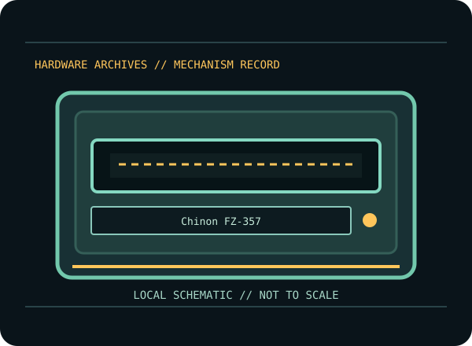

[ INDIVIDUAL COMPONENT // FLOPPY DRIVES ]
Chinon FZ-357 3.5-inch Floppy Mechanism
An internal 3.5-inch magnetic disk mechanism cataloged by its complete model code. Product-family similarity is not proof of identical wiring, media support, board straps or mechanical fit.

MODEL IDENTIFICATION: Chinon FZ-357. Confirm the complete label and board revision before wiring, servicing, or media access. Approximate dimensions and common PC-format operation do not replace the suffix-specific source drawings.
Documented mechanism characteristics
| Manufacturer / exact model | Chinon / FZ-357 |
|---|---|
| Capacity and format | 3.5-inch double-sided HD/DD mechanism; supports 1.44 MB and 720 KB PC formats when configured for the corresponding media/controller. |
| Interface and power | 34-pin floppy-control ribbon plus internal DC power. Non-PC hosts may require READY/disk-change behavior compatible with their controller. |
| Data rate | 500 kbit/s HD / 250 kbit/s DD in standard PC operation; validate rate and density selection for other hosts. |
| Mechanical dimensions (W × H × D) | Approximately 100 × 30 × 140 mm (W × H × D); check the exact mounting outline and bezel because production revisions differ. |
| Jumpers / drive select | FZ-357 configuration documentation covers drive select and host-mode/READY options. Follow the specific chart and board labels; country/revision variants are not presumed interchangeable. |
Controller and cable compatibility
- For ordinary PC use, confirm the controller supports the selected 3.5-inch format and rate, and use a correctly keyed 34-pin ribbon with the correct pin-1 orientation and separate drive power.
- On conventional PC twisted-ribbon cabling, cable position and drive-select straps work together to establish A:/B: addressing; untwisted systems may use different DS settings. Follow both the drive manual and host/controller documentation.
- Do not assume DOS/BIOS support for extended formats, three-mode disks, non-PC READY/disk-change behavior, or flux-level preservation from the 34-pin connector alone. Verify electrical signals and controller capability first.
Preservation and service cautions
- Inspect media for mold, oxide shedding, a damaged shutter, or debris; never insert visibly damaged media into a valued mechanism.
- Do not force the eject mechanism, move the head by hand, lubricate by guesswork, or adjust alignment without the matching service procedure and calibration equipment.
- Before cleaning/service, photograph the full label, board revision, straps, cable orientation and host setup. Preserve original media and raw disk images; verify copies and record checksums separately.
- Use known-good expendable media and stop on abnormal noise, repeated retries, head contamination or unstable reads. A filesystem copy may omit weak bits, unusual formats and copy-protection data.
Manufacturer / service-manual sources
- Chinon — FZ-357 product information (archival copy)Model-specific product information.
- Chinon FZ-357 — archived documentation download recordDocumentation reference; inspect the actual document before changing settings.
- IBM — Personal Computer Technical ReferenceStandard PC controller/cable baseline only.
Follow model- and revision-specific documentation. Related-family manuals provide context only where explicitly noted and must not be treated as interchangeable service instructions.